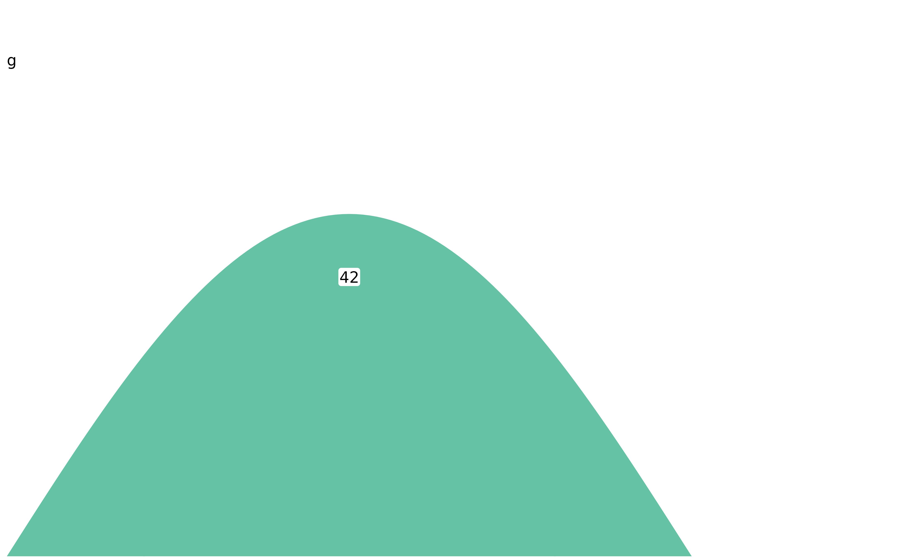

One row of a sashimi figure. Exported so a panel can be built, inspected or
restyled on its own; plot_sashimi() calls this once per group and stacks
the results.
Usage
sashimi_track(
x,
locus = NULL,
group = NULL,
xlim = NULL,
ymax = NULL,
map = NULL,
fill = "#66C2A5",
arc_color = NULL,
alpha = 1,
base_size = 9,
base_family = "",
arc_shape = "sine",
arc_height_rule = "auto",
arc_height_frac = c(0.8, 1.2),
arc_width_rule = "constant",
arc_width = 0.5,
arc_side = "above",
arc_n = 121,
show_arc_label = TRUE,
arc_label_format = "activity",
arc_label_position = c("on", "above", "none"),
label_background = TRUE,
label_padding = 0.6,
label_offset = 0.03,
background = NA,
background_alpha = 1,
min_count = 0,
group_label = NULL,
psi_label = NULL,
psi_pad = 0.3,
log_y = FALSE,
overlay_junction_fun = "mean",
theme = NULL
)Arguments
- x
A
sashimi_dataobject.- locus
A
locus_idor gene name. Defaults to the first locus.- group
The group (sample, stage, condition) to draw. Defaults to the first. Several groups may be given, in which case their coverage is overlaid in this one panel, each in its own colour from
fill.- xlim
Plot-space x limits; defaults to the locus window widened by
psi_pad.- ymax
Upper limit of the coverage axis.
NULLtakes the panel's own maximum, which is what makes each panel use its full height; pass a shared value (asplot_sashimi()does whenfix_y_scale = TRUE) to make panels quantitatively comparable.- map
An
intron_map()for compressed coordinates, orNULL.- fill, arc_color
Colours for the coverage area and the arcs.
arc_colordefaults tofill.- alpha
Opacity of the coverage area.
- base_size
Base font size in points.
- base_family
Font family for every piece of text in the figure. The empty string uses the graphics device's default. Text geoms do not inherit a theme's family, so this is threaded to each of them explicitly.
- arc_shape
One of
arc_shapes().- arc_height_rule
One of
arc_height_rules()."auto"(the default) staggers a handful of arcs at thearc_height_fracheights and switches to"span"once there are enough junctions that equal-height arcs would cross;"constant"always staggers;"span"scales height with junction width so nested junctions nest; the rest scale height with count.- arc_height_frac
Arc apex heights as a fraction of
ymax. The values are cycled across arcs - arcs sharing an end point first - so their labels cannot collide.- arc_width_rule, arc_width
Junction line width: a rule from
arc_widths()and its scale factor.- arc_side
"above"or"below"the coverage.- arc_n
Points per arc path.
- show_arc_label
Print the count on each arc.
- arc_label_format
A formatter: a function, or one of
"activity","count","coord","none".- arc_label_position
Where the count sits relative to its arc.
"on"(the default) puts it astride the apex, its opaque box interrupting the curve, which keeps the digits readable where arcs cross;"above"floats it clear of an unbroken curve;"none"is the same asshow_arc_label = FALSE.- label_background
Draw the arc label on an opaque box, so an arc passing underneath does not strike through the digits. Only applies when
arc_label_position = "on".- label_padding
Padding inside the label box, in points.
- label_offset
Gap between the arc apex and a label placed
"above", as a fraction of the panel height.- background
Fill for the coverage panel.
NA(the default) leaves it transparent; a colour tints the whole panel, which separates stacked tracks without drawing rules between them.- background_alpha
Opacity of
background.- min_count
Junctions with a count below this are not drawn.
- group_label
Text printed at the top left of the panel.
NULLuses the group name;NAprints nothing.- psi_label
Text printed in the right-hand gutter, or
NULLto take it from thepsislot.- psi_pad
Width of the right-hand gutter, as a fraction of the window.
- log_y
Draw the coverage on a
log10(1 + value)axis.- overlay_junction_fun
How a junction shared by several overlaid groups is combined into one arc:
"mean"(the default),"median","sum"or"max". Only used whengroupnames more than one group.- theme
A ggplot2 theme, or
NULLfortheme_omakase().
Examples
sd <- sashimi_data(
loci = data.frame(locus_id = "a", gene_name = "A", chrom = "chr1",
strand = "+", win_lo = 1000, win_hi = 2000),
tracks = data.frame(locus_id = "a", group = "g", pos = seq(1000, 2000, 10),
value = abs(sin(seq(0, pi, length.out = 101))) * 20),
junctions = data.frame(locus_id = "a", group = "g", x0 = 1200, x1 = 1800,
count = 42)
)
sashimi_track(sd)
